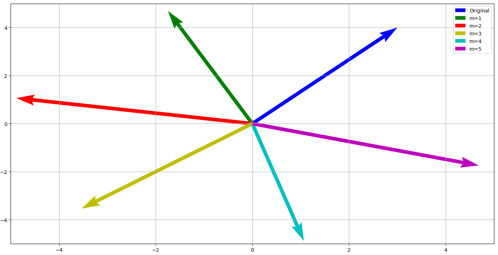
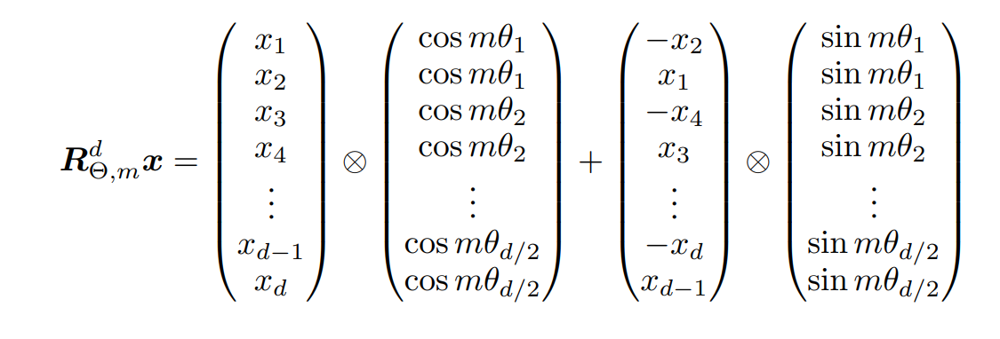
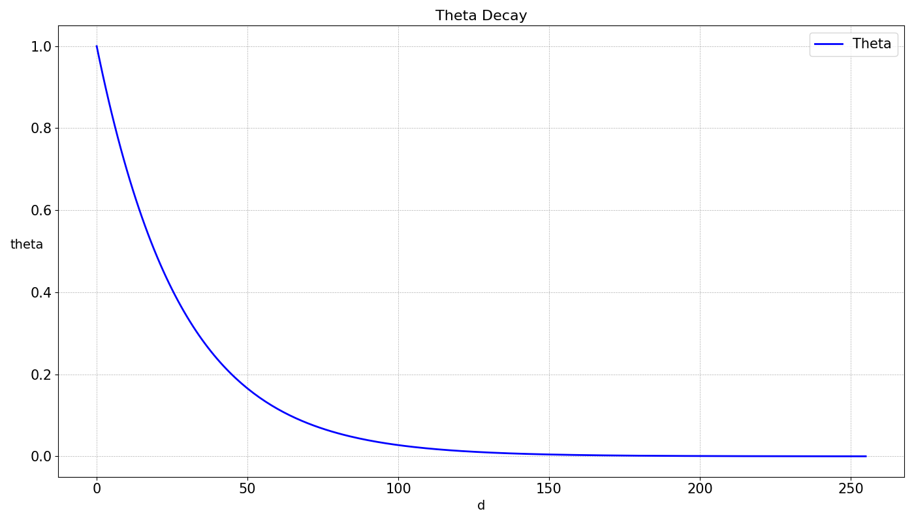

RoPE for the first time
The Why Behind the Winding
Rotary Position Embedding (RoPE) emerges as a combination of Absolute Position Embedding and Relative Position Embedding. While the former simply adds an embedding with the information of the token's absolute position, the latter calculates the positional relationship between each pair of tokens. RoPE takes the best of both approaches.
Core Principles
In RoPE, the fundamental idea is to rotate the token embeddings of any given token in the vector space by an angle $\theta$ based on its position $m$ in the sequence. That is, each token is rotated by $m\theta$, where $m$ is a constant for each independent position $(m = \{0,1,...,\text{seq len}\})$ and $\theta$ varies for each dimension of the embedding $(\{\theta_i :i=0,...,\text{d_{emb}}\})$. We will later delve into the importance of $\theta$.
RoPE's Rotational Dance
Let $u$ be a vector in $\mathbb{R}^2$, the rotation matrix is used to rotate it by an angle $m \theta$:
\begin{pmatrix} \cos(m\theta) & -\sin(m\theta) \\ \sin(m\theta) & \cos(m\theta) \end{pmatrix}
Let's visually see how rotation works in a 2-dimensional vector:

However, this matrix can only rotate vectors in two dimensions, and the dimensions of the vector to be rotated are at least hundreds. As a solution to this problem, a mathematical trick is used. The vector is divided into subgroups of 2, and this rotation is applied to each pair of dimensions. Thus, the matrix that rotates the new tensor looks like this, where each sub-matrix rotates each pair of dimensions.
\begin{pmatrix}\cos m\theta_1 & -\sin m\theta_1 & 0 & 0 & \cdots & 0 & 0 \\\sin m\theta_1 & \cos m\theta_1 & 0 & 0 & \cdots & 0 & 0 \\0 & 0 & \cos m\theta_2 & -\sin m\theta_2 & \cdots & 0 & 0 \\0 & 0 & \sin m\theta_2 & \cos m\theta_2 & \cdots & 0 & 0 \\\vdots & \vdots & \vdots & \vdots & \ddots & \vdots & \vdots \\0 & 0 & 0 & 0 & \cdots & \cos m\theta_{d/2} & -\sin m\theta_{d/2} \\0 & 0 & 0 & 0 & \cdots & \sin m\theta_{d/2} & \cos m\theta_{d/2}\end{pmatrix}
Note that each square sub-matrix has its own $\theta$.
We can see that this matrix is filled with zeros, making its traditional calculation very inefficient. The most efficient way to perform this operation, proposed in the original paper, is to use this form

Using complex numbers will be the best way to implement it, since any complex number $z$ can be represented in polar form as
$z = r \cdot (\cos \theta + i\sin \theta)$
Crafting the Equation
Let's analyze the steps to take to arrive at this expression, for example in a vector of dimension $d = 4$ and whose position $m$ in the sequence is 1.
We'll start by taking each pair of elements from the initial vector and, as explained before, grouping them in pairs, reducing the dimension by half $(d \to d/2)$. We take advantage of these groups of two elements to convert them into a single complex element. For example:
Note that converting each pair of dimensions of the embedding into a single one does not involve any loss of information as they are kept separate by the real and imaginary parts.
Now assuming we have already calculated the $\theta_i$ values such that $\Theta = \{\theta_0, \theta_1\}$, we perform the multiplication:
\begin{array}{c|c}\begin{pmatrix} x_1 + ix_2 \\ x_3 + ix_4\end{pmatrix} \otimes \begin{pmatrix} \cos(m_1 \theta_1) + i\sin(m_1\theta_1) \\ \cos(m_1 \theta_2) + i\sin(m_1\theta_2)\end{pmatrix}\end{array}
The symbol $\otimes$ represents element-wise multiplication or Hadamard Product.
After performing the multiplication, the expression becomes
\begin{pmatrix} x_1\cos(m_1 \theta_1) -x_2 \sin(m_1\theta_1) + i(x_1\sin(m_1\theta_1) + x_2\cos(m_1 \theta_1)) \\ x_3\cos(m_1 \theta_2) -x_4 \sin(m_1\theta_2) + i(x_3\sin(m_1\theta_2) + x_4\cos(m_1 \theta_2)) \end{pmatrix}
Separating real and imaginary parts again:
\begin{pmatrix} x_1\cos(m_1 \theta_1) -x_2 \sin(m_1\theta_1) & x_1\sin(m_1\theta_1) + x_2\cos(m_1 \theta_1) \\ x_3\cos(m_1 \theta_2) -x_4 \sin(m_1\theta_2) & x_3\sin(m_1\theta_2) + x_4\cos(m_1 \theta_2) \end{pmatrix}
This is exactly the expression we wanted to arrive at.
- Original vector: $[x_1, x_2, x_3, x_4]$
- Complex vector: $[x_1 + ix_2, x_3 + ix_4]$
Decoding $\theta$: A Closer Look
Let's remember, intuitively, each dimension of a token's embedding allows the model to represent certain characteristics of it. Let's imagine a simple case with a single token $x$ in position $m$. Each dimension will be rotated $m \theta_i$ where $m$ will be constant, so we'll only focus on $\theta_i$.
Let's quickly see how the $\theta$ values are calculated: $\Theta = \{\theta_i = 10000^{-2(i-1)/d},i \in [1,2,...,d/2]\}$
As calculated, they decay logarithmically.

This means that the first dimensions will undergo more significant rotations while progressively the rotations will be less significant. In short, $\theta$ determines how much or how little a vector rotates. This is important because after applying RoPE, the attention mechanism is performed. In this, the dimensions that have assigned more significant rotations will be very sensitive to positional changes, capturing local details, while later dimensions, with less significant rotations, will be less sensitive, capturing more global and contextual relationships. Intuitively, RoPE allows the model to organize the details of each embedding.
RoPE's $m \theta$ Arithmetic
So how do we calculate $m\theta$ ?
Let's start by calculating the $\theta$ values. We use the formula offered in the paper. A $\theta$ is calculated for each dimension of the vector.
$\Theta = \{\theta_i = 10000^{-2(i-1)/d},i \in [1,2,...,d/2]\}$
Let's calmly analyze the expression. $2(i-1)$ refers to the index of the vector dimension, although the expression is not initially trivial, it simply takes the even indices, starting from zero. Additionally, it only calculates up to $d/2$ because this is the new dimension of our complex vector.
Thus, calculating the set $\Theta$ is relatively simple.
i = torch.arange(1,d/2 + 1)
theta = 10000**(-2*(i-1)/d)
theta_numerator = torch.arange(0,d,2)
# shape: d/2
theta = 1.0/10000.0**(theta_numerator/d)
m = torch.arange(seq_len)
# multiply each element by each element
freqs = torch.outer(m,theta)# shape: seq_len , d/2
freqs_complex = torch.polar(torch.ones_like(freqs),freqs)
grouped_x = x.reshape(*x[:-1],-1,2) # (1, n_emb) -> (1, n_emb/2, 2)
# transform x into a complex number
x_complex = torch.view_as_complex(x.reshape(grouped_x))
# add dimensions due to the existence of parallel batch and head dimensions
freqs_complex = freqs_complex.unsqueeze(0).unsqueeze(2)
# multiply element by element to add the respective rotations
x_rotated = x_complex * freqs_complex
# convert back to real
x_out = torch.view_as_real(x_rotated)
# return to original shape
x_out.reshape(*x.shape)
The Bigger Picture
After all this explanation, it's important to see how this is used in modern architectures like Llama 3. Let's consider a simple case with a single token. We start by obtaining the corresponding embeddings for the token and applying RMS norm to them. Through multiplication by certain weight matrices, $x_k$ and $x_q$ are obtained. It's to these vectors that RoPE is applied. Immediately after, they are introduced into the attention mechanism.